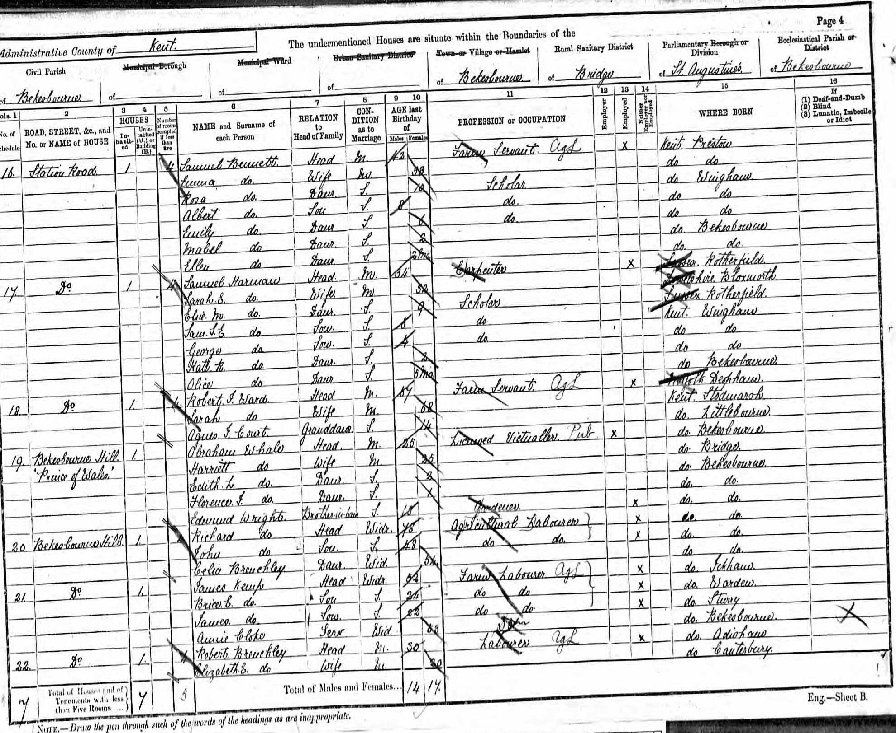
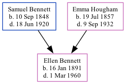

Ellen Bennett 1891 - 1960
[ Home ] | [ Calendar ] | [ Surnames Index ] | [ Family History ]The youngest of 5 children of Samuel Bennett (a farm servant) and Emma Hougham, Ellen Bennett, the first cousin three-times-removed on the mother's side of Nigel Horne, was born in Bekesbourne, Kent, England on Jan 16, 18911.
Throughout her life, Ellen lived in several places: on Station Road in Bekesbourne on Apr 5, 18912; at Netherton, Sibertswold, Kent, England on Mar 31, 19013; and at 2 Whittington Terrace in Sibertswold on Apr 2, 19114.
She died on Mar 1, 1960 in Folkestone, Kent1.
Parents
- Samuel was born on Sep 10, 1848
- Emma was born on Jul 19, 1857
Citations
- England & Wales deaths 1837-2007 - Findmypast
- 1891 England, Wales & Scotland Census - Findmypast (was age 0 and the daughter of the head of the household)
- 1901 England, Wales & Scotland Census - Findmypast (was age 10 and the daughter of the head of the household)
- 1911 Census for England & Wales - Findmypast (was age 20 and the daughter of the head of the household)
Media
1891 UK Census

1891 England, Wales & Scotland Census - GBC/1891/0005727011
England & Wales births 1837-2006 - BMD/B/1891/1/AZ/000046/329
England & Wales deaths 1837-2007 - BMD/D/1960/1/AZ/000087/131
1901 England, Wales & Scotland Census - GBC/1901/0005528267
1911 Census for England & Wales - GBC/1911/RG14/04583/0037/3
Family Tree
Generated by Ged2Site. Last updated on Jul 20, 2025